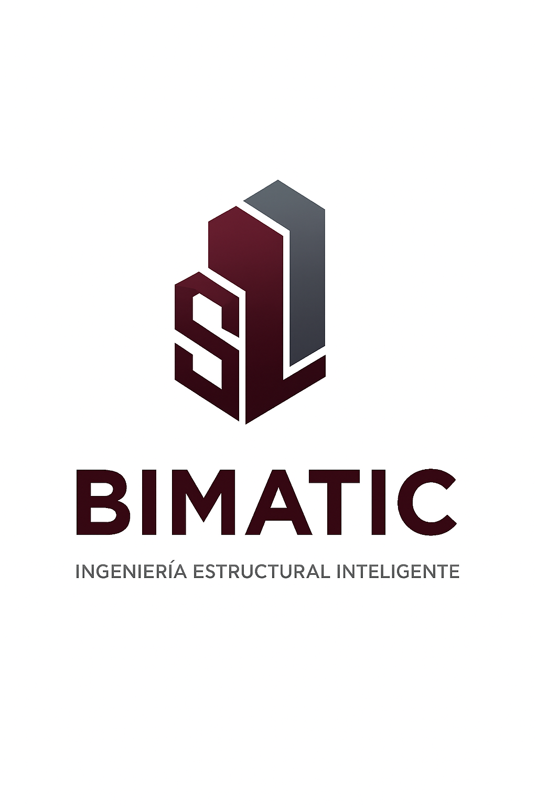

Expertos en diseño estructural inteligente y automatización BIM para proyectos de alta complejidad.
En Bimatic S.A.S impulsamos la transformación digital del sector de la ingeniería, la arquitectura y la construcción a través de soluciones innovadoras basadas en la metodología BIM (Building Information Modeling). Nos especializamos en la optimización de procesos, la coordinación de proyectos y la gestión inteligente de la información, permitiendo a nuestros clientes tomar decisiones más eficientes, reducir errores en obra y maximizar el valor de sus proyectos. Nuestro enfoque combina tecnología, conocimiento técnico y una visión estratégica, adaptándonos a las necesidades específicas de cada proyecto. Acompañamos a nuestros clientes en cada etapa, desde la planificación hasta la ejecución, garantizando calidad, precisión y cumplimiento. En Bimatic creemos en construir mejor, con información clara, procesos eficientes y herramientas digitales que marcan la diferencia.
Representante Legal - Ingeniera Civil & Co-fundadora. Especialista en automatización con distintas herramientas.
Magister en Ingenieria Civil, Co-fundador & Socio Estratégico. Dirección técnica y coordinación de proyectos BIM.

Coordinación y diseño en concreto reforzado y acero con Revit, Tekla Structures y Herramientas de diseño.
Análisis de estructuras de concreto y metalicas.
Desarrollo de scripts en Python para optimizar cálculos estructurales complejos.
¿Tienes dudas sobre normativa, diseño estructural o de flujo de trabajo? Escríbenos.